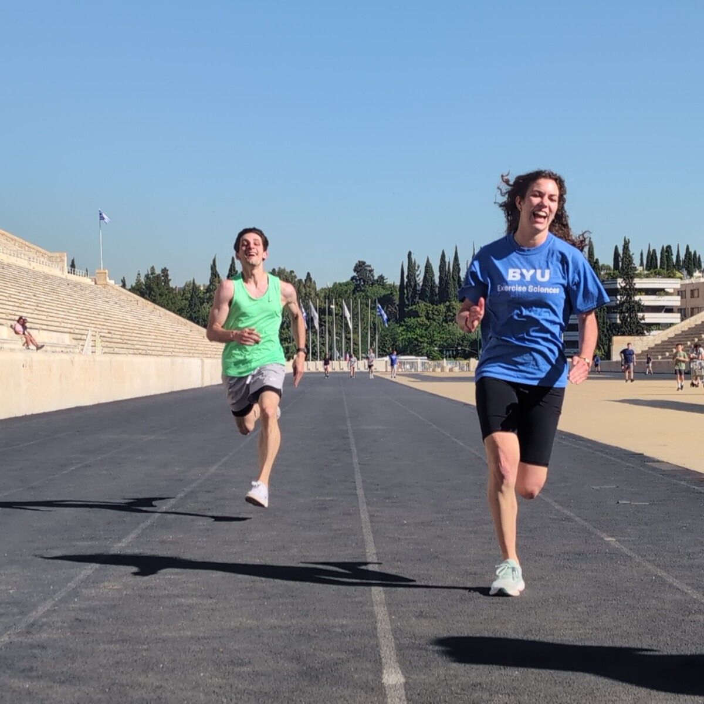

Custom Software
BYU Move Team Management System
A Flask-based application for the BYU Move initiative with public registration and survey paths, participant self-service, and mentor and administrative operations.
← Back to custom software
Explore three representative views from the undeployed application.
Program overview, registration entry point, resource links, and survey access.
Email-based signup lookup and session-change flow.
Attendance, sessions, participants, calendar, reporting, and administrative settings.
Exercise Sciences · BYU Move!
Move together. Build consistency.
This representative home view uses the project’s supplied track image and mirrors its public paths to learn more, register, and access program resources.
Participant self-service
Movers Dashboard
A participant can look up registered sessions and move to another available time.
4 spaces shown
2 spaces shown
Mentors Portal
Manage attendance and view session information — Spring Term 2026
Next Session
No upcoming sessions found in this demonstration state.
Pending Attendance
No pending attendance from sessions completed in the last 24 hours.
Sessions
Select a session to view its schedule, mentor assignment, participant list, and attendance status.
Participants
Search the participant roster and open an attendance profile for an individual mover.
Calendar
Switch between monthly and weekly views, navigate dates, and manage program events.
Manage Sessions
Create and update session schedules, capacities, assignments, date windows, and participant rosters.
Manage Mentors
Maintain the mentor roster and role assignments used by the portal.